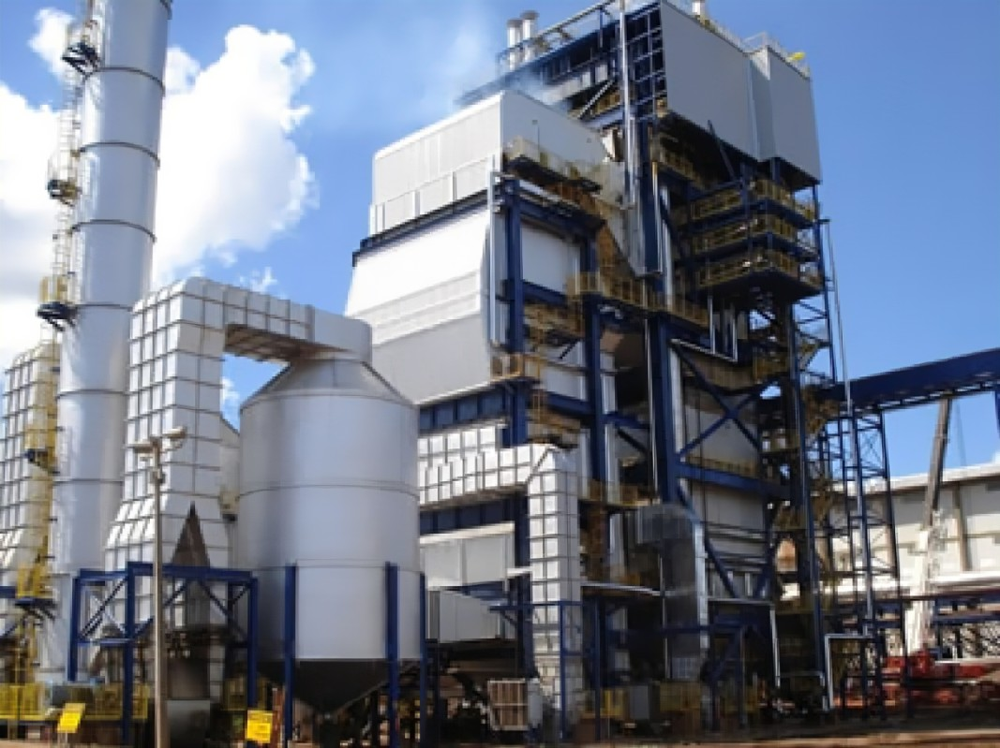

Usina de Biomassa
Biomassa é toda matéria orgânica de origem vegetal ou animal utilizada para a produção de energia, como carvão, lenha, bagaço, etc. Por ser uma fonte de energia descentralizada e de baixa eficiência, é tradicionalmente utilizada em países menos desenvolvidos, portanto, a representatividade dessa energia na matriz energética mundial carece de alguns dados.

Vantagens
- Alta confiabilidade;
- Capacidade de responder as mudanças da demanda;
- Há menos corrosão dos equipamentos(caldeiras, fornos, etc.).
Desvantagens
- Desmatamento e destruição do meio ambiente;
- Os biocombustíveis líquidos contribuem para a formação de chuva ácida;
- Em comparação com outros combustíveis, tem um valor de aquecimento inferior;
- Dificuldades no transporte e armazenamento de biomassa sólida.